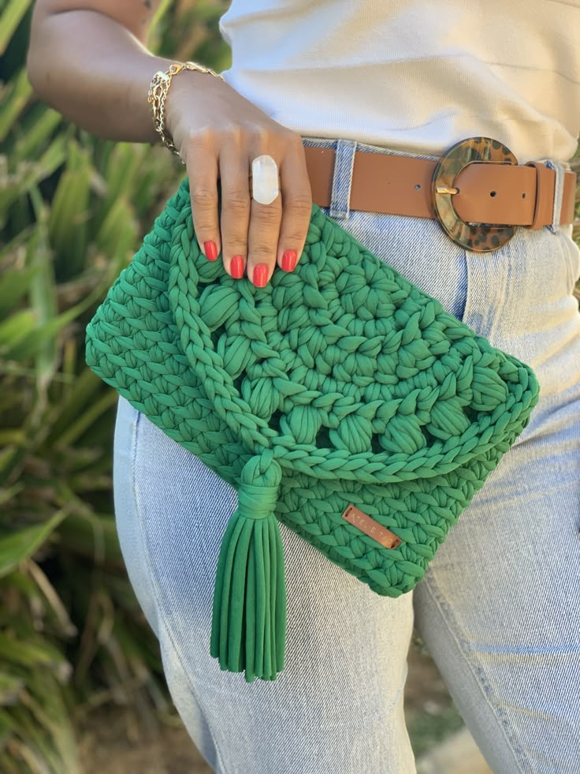

Escolhendo o local ideal
Antes de começar a fazer crochê, é importante escolher um local com as seguintes características:
- Boa iluminação: Preferencialmente luz natural ou uma lâmpada direcionada para o trabalho.
- Cadeira confortável: Com encosto para as costas e altura que permita apoiar os pés no chão.
- Superfície de apoio: Uma mesa ou braço de sofá para descansar os cotovelos, se necessário.
Posicionamento do corpo
Mantenha uma postura que favoreça o conforto e evite tensões musculares:
- Coluna ereta: Evite curvar-se sobre o trabalho. Mantenha as costas apoiadas no encosto da cadeira.
- Ombros relaxados: Não eleve os ombros nem os tensione durante o trabalho.
- Cotovelos próximos ao corpo: Mantenha os braços em uma posição natural, sem esticá-los demais.
- Pés apoiados: Mantenha os pés bem apoiados no chão ou em um apoio para pés.
Dica importante
Faça pausas regulares a cada 30 minutos para alongar os dedos, pulsos e ombros. Isso previne lesões por esforço repetitivo e alivia a tensão muscular.